Loom Technical Development [for those interested.]
Geometric Subdivision
During Spring session
of 2010 I built a simple 2D and 3D animation and drawing engine for a
first year computational media class. I
called it Loom in recognition of the Jacquard Loom, which served as an early
model for the computer and which was fundamentally
concerned with managing the replication of graphic textile patterns. The aim was to enable students to look
beneath the hood of computer graphic processes and to indicate the potential
for creative tinkering and reconstruction.
The engine provided basic functions for producing regular polygonal
shapes. All the points on regular
polygons are equidistant from the centre and all the sides are of equal
length. A cube and an equilateral
triangle provide examples. The points
that make up these basic shapes can then be transformed in various ways –
translated, scaled and rotated - to produce other, more complex shapes. I began this project with the thought of
adding one more feature – the capacity to subdivide a regular polygonal shape
into a finer polygonal mesh. Subdivision
is a conventional means for lending 3D shapes a more curved and organic feel.
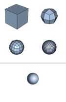
The image above displays Catmull-Clark
quadrilateral subdivision of a basic cube into something that approximates a
sphere. Note that the Catmull-Clark
process involves both subdividing the shape and repositioning the new points to
produce the impression of natural curvature.
I could have attempted to implement the Catmull-Clark formula within the
graphics engine, however, I was keen to work things
out for myself. I expected to spend
perhaps a couple of days mucking around with the problem, but things became
more complicated and absorbing. Some
simple experiments suggested other possibilities. Very swiftly issues of smoothly curved 3D
geometry slipped into the background and I became more concerned with the
potential for 2D recursive pattern-making.
Subdivisions Modes
Straight away I realised that it was
easier to deal with subdivision in two dimensions rather than three, so I
considered how to subdivide 2D regular polygons. I started with a simple square and recognised
4 major types of subdivision: quadralinear, triangular, bifurcated and echoed.
|
Quadralinear |
Triangular |
Bifurcated |
Echoed |
|
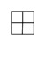 |
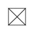 |
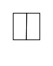 |
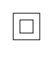 |
Quadralinear subdivision breaks a
square into four smaller squares. The
process involves the following steps:
· calculating the centre of the square by averaging the
existing points (the four corners)
· calculating the set of mid-points on each of the lines
between the existing points
·
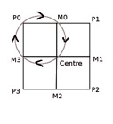
proceeding in sequence from the first corner point (P0) to the last (P3), composing a new polygon from the current corner (P0) to the next mid-point (M0), then to the centre and finally to the mid-point given by the number of sides minus one added to the current corner point index (M3 in this case).Triangular subdivision is
simpler. There is no need to calculate
mid-points. The triangles are built from
the existing corners and the centre.
Bifurcation appears simple but actually ends up
being a bit more complex. Echo is
arguably not a form of subdivision at all, but a mode of internal
doubling. Nonetheless, it is convenient
for my purposes to treat it as a form of subdivision. It involves scaling the corner points around
a notional center to produce a smaller (or larger, if you prefer) polygon.
To make things clear, what happens
with subdivision is that the initial shape gets passed in as an input parameter
to the relevant subdivision function and a set of subdivision shapes gets
calculated and returned. The original
shape is lost, except in terms of its implicit status within the new set of
shapes.
Very importantly, we are not only
dealing with squares. The subdivision functions
need to work with regular polygons that have any number of sides. The modes of subdivision defined above work
on any regular polygon that has at least 3 sides. Here, for instance, are the same functions
applied to equilateral triangles and pentagons.
|
Quad |
Tri |
Bi |
Echo |
|
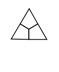 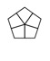 |
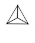 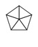 |
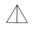 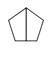 |
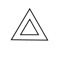 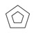 |
I should note that typically, once
subdivision has passed through a couple of generations, regular polygons become
irregular polygons, but the functions still work.
Subdivision Functions
On the following two pages are the
full set of subdivision functions incorporated in the Loom engine.
|
Subdivision
Mode |
Info |
Triangle |
Square |
Pentagon |
|
Quad |
Subdivide into a set four
sided polygons equal to the total number of original sides |
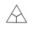 |
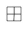 |
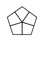 |
|
Quad_Bord |
Subdivide into a set of four side border
polygons equal to the total number of original sides |
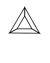 |
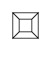 |
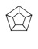 |
|
Quad_Bord_Echo |
Same as Quad_Bord but also
includes echoed centre polygon |
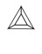 |
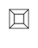 |
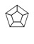 |
|
Quad_Bord_Double |
Subdivide into a set four
sided polygons equal to double the total number of original sides |
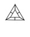 |
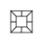 |
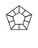 |
|
Quad_Bord_Double_Echo |
Same as Quad_Bord_Double but
also includes echoed centre polygon |
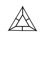 |
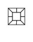 |
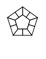 |
|
Tri |
Subdivide into a set triangular polygons equal to the total number of
original sides (built from centre and corners) |
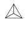 |
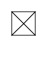 |
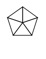 |
|
Tri_Bord_A |
Subdivide into a set triangular polygons equal to the total number of
original sides (built from line mid-points and corners) |
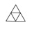 |
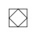 |
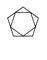 |
|
Tri_Bord_A_Echo |
Same as Tri_Bord_A but also
includes echoed centre polygon |
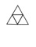 |
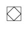 |
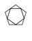 |
|
Tri_Bord_B |
Subdivide into a set triangular polygons equal to the total number of
original sides (built from the corners of a rotated internal echo and the
original corner points) |
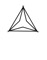 |
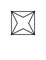 |
|
|
Tri_Bord_B_Echo |
Same as Tri_Bord_B but also
includes echoed centre polygon |
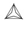 |
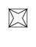 |
|
|
Tri_Star |
Similar to Tri_Bord_B
but builds internal triangles rather than borders. |
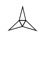 |
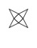 |
|
|
Tri_Star_Fill |
Same as Tri_Star but also
includes border polygons |
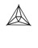 |
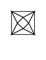 |
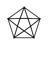 |
|
Tri_Bord_C |
Similar to Tri_Star and
Tri_Bord_B but calculates three triangular subdivision
for each original side |
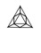 |
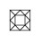 |
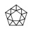 |
|
Tri_Bord_C_Echo |
Same as Tri_Bord_C but also
includes echoed centre polygon |
|
|
|
|
Split_Vert |
Splits the shape into two
polygons that have the same number of sides as the original shape |
|
|
|
|
Split_Horiz |
Splits a polygon
horizontally. Only implemented for
squares at this stage. |
Not implemented yet |
|
Not implemented yet |
|
Split_Diag |
Only implemented for even
sided polygons at this stage, odd sided polygons
just return a Split_Vert. |
|
|
|
|
Echo |
Scales the original
shape. Returns both the original shape
and the echoed shape. Centre is
calculated relative to this shape. Central image shows Quad subdivision
followed by Echo subdivision. |
|
|
|
|
Echo_Abs_Center |
Same as above but center
calculated relative to the whole image. Central image shows Quad subdivision
followed by Echo_Abs_Centre subdivision. |
|
|
|
Joining the Dots
These functions are all stitching
functions. They link together sets of points.
These sets include:
· the original corner points (black)
· the center of the shape (red)
· the mid-points along each original side (grey)
· the scaled corner points (blue), which can also be
transformed (purple – here rotated)
Additional Parameters
There are a range of additional
parameters that complicate the basic subdivision operations.
|
Parameter |
Description |
|
|
|
|
Randomised centre point value |
The centre point can be
randomised slightly or greatly depending on the value supplied. Low values (e.g.
2) produce high variability. High
values (e.g. 12) produce less variability. |
Quad
subdivision with
value 6 randomisation of the centre |
|
|
|
Line ratios |
So called 'mid-points' can be
positioned anywhere along the line depending upon the pair of values
supplied. Values are typically between
0 and 1 to keep inside the existing line. |
Quad
subdivision with line ratios set to 3 and 7 |
|
|
|
Echo transformations |
Echoed shapes can have their
width, height, scale, rotation and translation specified. |
Echo with
width and height independent scaling |
Echo with
scaling and rotation |
Echo with scaling, rotation
and translation |
|
Align shapes after
subdivision |
Due to the way many
subdivision operations proceed in sequence from first corner point to the
last, shapes can be built with awkward alignments. You can line everything up (if you like)
with the align
command. |
Quad
subdivision followed by Split_Vert subdivision |
Quad
subdivision followed by align command and then Split_Vert subdivision. (Also employs rotate command – a standard
polygon transform. |
Quad and then Split_Diag Same but with the align command after the initial Quad
subdivision |
|
Continuous |
Works with line ratios to
ensure adjacent polygons line up. |
Two generations of quad subdivision with continuity set
to true |
The same but with continuity set to false |
|
|
Polygon visibility |
You can define which polygons
in a subdivision are visible (every third, random 1 in 10, etc.). Only affects the last generation of
subdivision. |
Quad
subdivision with alternate-even visibility rule (note quad subdivision
proceeds clockwise from top left) |
Quad
subdivision with alternate-odd visibility rule |
|
Recursive Subdivision
The key creative pattern-making
potential lies not in any specific motion of subdivision but in their capacity
to be stacked one on top of the other.
Subdivision is typically arranged recursively. One generation of subdivision is followed by
another, producing a rapidly more finely tessellated mesh and emergent
dimension of pattern related to the interplay between generations. Only the final generation ever appears but it
reveals the structure of all the generations that preceded it. Some simple examples.
|
Two simple
Quad subdivisions |
Quad
subdivision followed by Quad-Bord_Echo subdivision |
Quad
subdivision followed by Tri subdivision |
Quad
subdivision followed by Tri-Star subdivision |
Quad subdivision
followed by Tri-Star_Fill subdivision |
Here are some slightly more complex
examples that involve a mixture of quadralinear and triangular subdivision.
|
Sequence:
Quad, Quad, Quad, Tri |
Sequence:
Quad, Quad, Tri, Tri |
Sequence:
Quad, Tri, Quad, Tri |
|
Sequence:
Tri, Quad, Quad, Quad |
Sequence:
Tri, Quad, Quad, Tri |
Sequence:
Tri, Quad, Tri, Quad |
Folds, Peaks and Troughs
I mentioned earlier that one of the
program parameters specifies the extent of randomisation of subdivision
centres. Over a number
of generations this produces terrain like effects. Bits of the mesh get stretched, folded and
scrunched up. This is very similar to
how Perlin noise produces ordered randomisation in a range of media – although
my version was discovered by accident. I
was not aware how the work of recursive subdivision would lend structure to
random processes, shaping tendencies, peaks and troughs rather than uniformly
distributed effects.
|
Sequence:
Quad, Quad, Quad, Quad. No randomisation of subdivision centres. |
Sequence:
Quad, Quad, Quad, Quad. Randomisation of subdivision centres (value 6). |
Sequence:
Quad, Quad, Quad, Quad. Randomisation of subdivision centres (value 1.2). |
Final Notes
The subdivision operations and overall
graphics engine lack any kind of graphic user interface (GUI). The program enables only programmatic
control. I have left it this way for a number of reasons.
The aim is to expose dimension of code, not hide them. Building a GUI tends to take at least as
long, if not much longer, than building the underlying logical system and tends
to slow and constrain further development of the software. Having built a number of
GUI graphics applications in the past, I know that they rarely get used, even
by myself, once the original body of work is completed.
The engine is written in Scala and
reads a range of configuration and data files.
It outputs either single images or sequences of images. These images can be output at any resolution depending up machine RAM limits.
The Loom project is open-source. An original command line version resides on
git-hub (http://github.com/brogan/Loom). Since then I have shifted the project to the Eclipse integrated
development environment (IDE) and plan to update the git-hub site soon.
One last thing. I
have experimented with subdividing bezier curve shapes. This is a bit more complex because it
involves calculating mid-points on curved lines. I have the basic system working but it needs
to be carefully integrated within the subdivision code base. Here is an example of a subdivided bezier
curve shape.